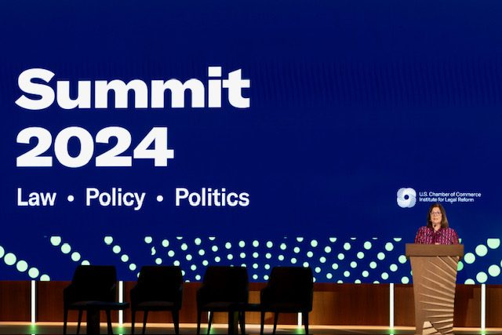
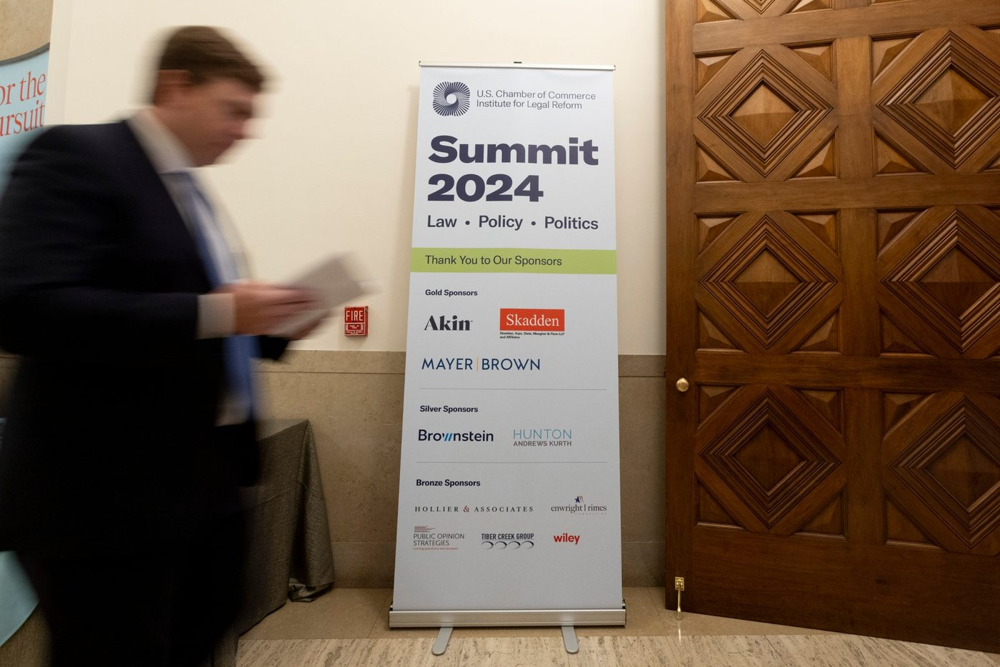
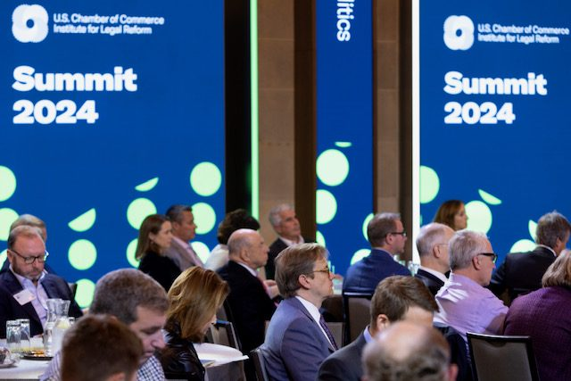

ILR Summit 2024
The Institute for Legal Reform's annual Summit brings together leaders from business, law, government, and the media to discuss civil justice policy. I worked on four Summits as the event moved from virtual to fully in person, and led the 2024 event end to end.
registrants for an invite-only, in-person event in 2024
sponsors across gold, silver, and bronze tiers
Summits from 2021 to 2024, from support role to event lead
Four Summits, four formats
The event changed shape every year after the pandemic, and my role grew with it.
- 2021Virtual
I joined ILR in August with the Summit in October. I taught myself to build the live-show graphics and on-screen “bugs” on a tight turnaround, and ran LinkedIn ads to drive registration.
- 2022In person + stream
The first in-person Summit since before the pandemic, with a virtual stream for remote attendees.
- 2023In person + virtual
A hybrid event serving guests in the room and online.
- 2024In person · I led it
An invite-only, in-person Summit. My first year as lead, responsible for the whole event.
Everything from the run of show to the cocktail reception
In 2024 I led the Summit for ILR, coordinating the events team, the AV team, the print shop, and executive leadership.
Planning
- Wrote the run of show
- Introduced a color-coded SharePoint tracking list, new for 2024, to keep every deliverable on schedule
- Kept executive leadership, the events team, and vendors working from the same plan
Creative
- Designed the creative for the room: stage screens, banners, and signage, including directional signs
- Produced the digital assets for the web and email
- Managed print production with the print shop
Sponsors
- Led sponsor outreach for 11 sponsors across three tiers
- Tracked each sponsor's benefits and made sure every one was delivered, from signage to email
Show day
- Worked on headset with the AV team to call the show, keeping speakers, screens, and cues on time
- Ordered catering for breakfast, lunch, and an evening cocktail reception, with every dietary restriction covered





The 2024 Summit drew nearly 200 registrants from business, law, and government, with 11 sponsors behind it.
It was my first year as lead, and the event ran on the plan: one run of show, one shared tracker, and every sponsor commitment delivered.
From 2021 to 2023 I supported the Summit with creative, live-show graphics, and promotion. In 2024 I led it: planning, creative, sponsors, vendors, catering, and calling the show on event day.
What it shows
A high-profile event is hundreds of small commitments kept on time. Leading one means owning the plan, the creative, and the relationships, and staying calm on the headset when it's live.